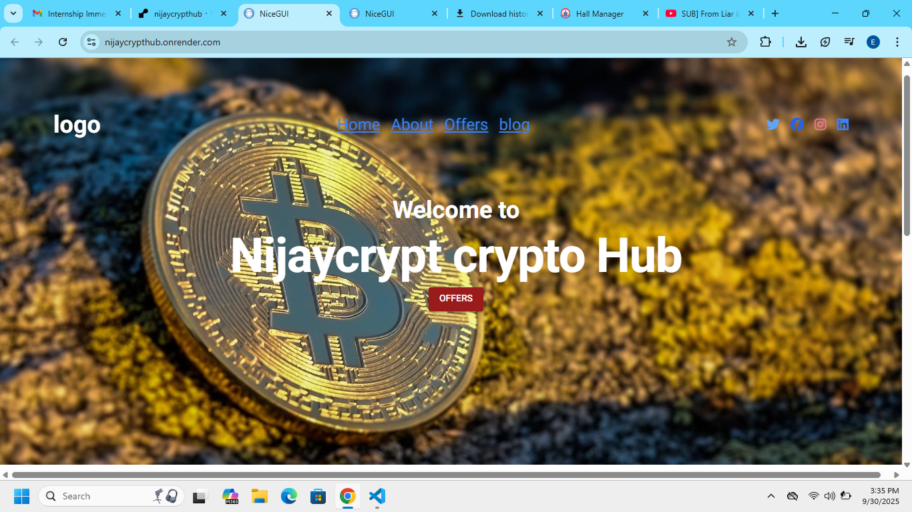

PROJECTS

Medifind
Medifind is a web application designed to help users locate nearby pharmacies and check the availability of medicines in real-time. It aims to streamline the process of finding essential medications, especially during emergencies. This help provide timely and comprehensive care.
Working on medifind with a team came with its own challenges from managing different perspectives and ensuring seamless integration of features and deadlines. However, through effective communication, collaboration, and a shared vision, we were able to overcome these challenges and deliver a functional and user-friendly application.

DISTANT HAVEN
Distant haven is a personal project conceptualized and built to serve as a hub for creative expression and storytelling. It is intended to feature a collection of fiction, poetry, and real-life stories curated from budding talents and people who want their stories told. Like its name suggests, it is also a place where book lovers and readers come to escape into their fantasies
Building Distant Haven was a journey of passion and perseverance. As a solo developer, I faced challenges ranging from technical hurdles to content curation. However, my dedication to creating a platform that celebrates creativity kept me motivated. Through continuous learning and adaptation, I was able to bring Distant Haven to life as a space for storytellers and readers alike.

RAEL ADVERTISEMENT
RAEL ADVERTISEMENT is a platform that connects sellers with potential customers. It allows users to create, manage, and track advertisements for products or services they wish to promote and presents cosumers with a variety of options based on their interests and needs.Rael Advertisement was a team project that involved extensive planning, design, and implementation phases. The team worked together to ensure seamless integration of features and user experience.
One challenge we faced was ensuring responsiveness across different devices and browsers. However, through collaboration and testing, we were able to overcome these challenges and deliver a robust advertisement platform.
NIJAYCRYPT HUB
Nijaycrypthub is a comprehensive cryptocurrency information platform that provides users with real-time data, market trends, and educational resources about various cryptocurrencies. It aims to empower users with the knowledge they need to make informed decisions in the dynamic world of digital assets.
Developing Nijaycrypthub was a challenging yet rewarding experience. As a solo developer, I had to wear multiple hats. One of the main challenges I faced was ensuring the accuracy of information presented to users. Through perseverance and continuous learning, I was able to overcome these challenges and create a valuable resource for cryptocurrency enthusiasts.
EVENTS HIVE (Figma to code)
Translated a Figma design into a fully functional responsive web application using HTML and CSS. The project involved meticulous attention to detail to ensure pixel-perfect accuracy and responsiveness across various devices.
Converting the Figma design into code presented challenges such as maintaining design integrity while ensuring responsiveness. However, through careful planning and testing, I was able to successfully bring the design to life as a functional web application.
PERSONAL PORTFOLIO
A personal portfolio website built using HTML and CSS to showcase my skills, experiences, and projects. The portfolio is designed to be visually appealing and user-friendly, providing visitors with an overview of my professional journey.
Creating my personal portfolio was a fulfilling experience that allowed me to reflect on my journey and showcase my skills. One challenge I faced was ensuring that the design was both aesthetically pleasing and functional. Through iteration and feedback, I was able to create a portfolio that effectively represents me as a developer.